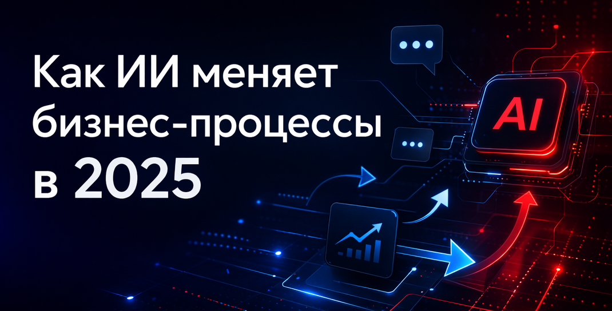
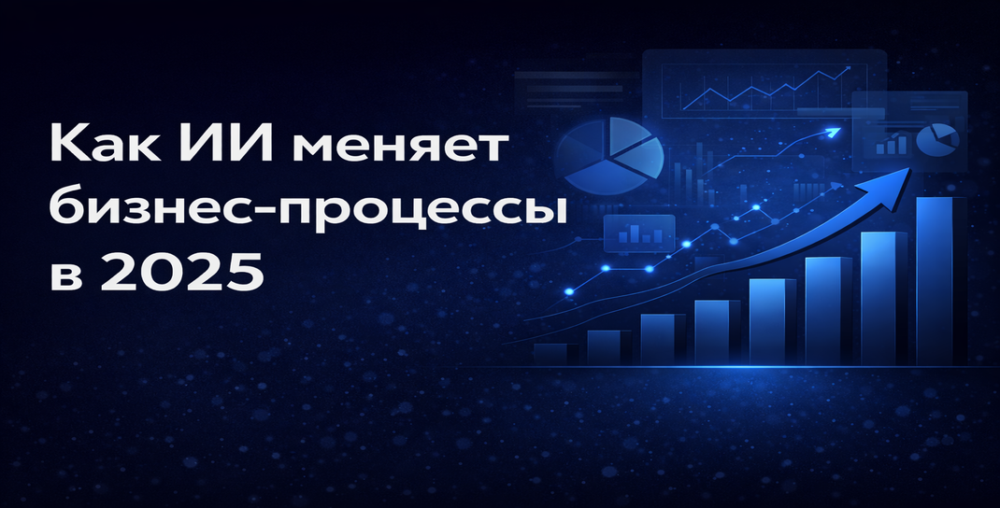

Искусственный интеллект (ИИ) уже давно стал частью современной экономики, но после 2025 года его влияние на бизнес-процессы достигнет беспрецедентного уровня. Дело в том, что компании уже активно используют ИИ для автоматизации задач, повышения точности прогнозов и оптимизации ресурсов. Причем занимаются этим не только крупные корпорации, но и представители среднего бизнеса.
Новые технологии внедряются в области продаж, логистики, управления персоналом и исследований, изменяя устоявшиеся подходы. ИИ помогает бизнесу не только повышать эффективность, но и создавать более персонализированные продукты и услуги. Однако стремительное развитие этой технологии порождает и новые вызовы, связанные с безопасностью и этическими аспектами. Рассмотрим, как именно ИИ трансформирует ключевые аспекты управления и операций в бизнесе.
Искусственный интеллект позволяет компаниям глубже понимать потребности аудитории, предугадывать их ожидания и предлагать персонализированные решения, причем в реальном времени. То есть человеку уже не нужно ждать, пока оператор или менеджер по продажам что-нибудь подберет — предложение будет сформировано для него сразу. Таким образом, автоматизированные системы анализа данных и умные ассистенты обеспечивают клиентам новый уровень обслуживания, что повышает удовлетворенность и лояльность.
А продвинутые алгоритмы машинного обучения интегрируются в маркетинговые и торговые процессы, помогая компаниям более точно таргетировать аудиторию, минимизировать затраты на привлечение клиентов и увеличивать продажи. Рассмотрим, как именно ИИ улучшает клиентский опыт и трансформирует стратегии продаж.
ИИ создает действительно инновационные возможности для взаимодействия с клиентами, делая общение более быстрым, точным и эффективным. Чат-боты и виртуальные помощники, работающие на основе ИИ, обеспечивают круглосуточную поддержку, помогая решать проблемы пользователей за считанные секунды. Системы обработки естественного языка (NLP) позволяют распознавать эмоции и тон общения клиентов, что помогает предоставлять индивидуализированные предложения и услуги.
Кроме того, ИИ анализирует поведение пользователей на сайтах и в приложениях, предугадывая их потребности и предлагая релевантный контент или товары. Всё это создаёт новый уровень клиентского опыта, где бизнес способен реагировать на запросы максимально точно и быстро.

Искусственный интеллект уже позволяет предсказывать сбои в поставках, оптимизировать маршруты и минимизировать издержки, делая логистические операции более надежными и гибкими. Благодаря точному прогнозированию спроса, компании избегают излишков на складах и минимизируют потери. Давайте разберем чуть подробнее, как именно ИИ трансформирует управление цепочками поставок и повышает скорость логистических операций и рассмотрим ключевые направления изменений в логистике:
Итак, ИИ обеспечивает более точное планирование, автоматизацию рутинных процессов и гибкость логистических цепочек. Благодаря этим улучшениям компании могут ускорять доставку, минимизировать затраты и повышать удовлетворенность клиентов.
Влияние подхода Data-driven становится всё более заметным благодаря ИИ, который позволяет собирать, анализировать и использовать данные для принятия более точных решений. Компании, ориентированные на данные, используют машинное обучение для выявления скрытых паттернов (закономерностей), часто просто недоступных для нахождения людьми, и анализа больших объемов информации. Это помогает оптимизировать бизнес-процессы, предсказывать изменения рынка и разрабатывать эффективные стратегии. И потому подход Data-driven становится ключом к конкурентоспособности, предоставляя компаниям возможность принимать решения быстрее, точнее и на основе доказательной базы.
ИИ изменяет и управление персоналом, делая процессы найма, адаптации и обучения сотрудников более эффективными. Алгоритмы помогают оценивать резюме, выявлять наиболее подходящих кандидатов и предсказывать их потенциал на основе анализа данных. Системы управления персоналом, интегрированные с ИИ, автоматизируют рутинные задачи, такие как составление графиков, расчет заработной платы и анализ производительности. Кроме того, ИИ-технологии позволяют HR-отделам разрабатывать программы повышения вовлеченности сотрудников и прогнозировать их потребности, повышая уровень удовлетворенности и удержания персонала.
В области исследований и разработки ИИ становится настоящим катализатором инноваций. Алгоритмы машинного обучения ускоряют поиск новых материалов, химических соединений и технологических решений. Компьютерное моделирование и симуляции, управляемые ИИ, позволяют сократить время на создание прототипов и тестирование, снижая затраты и риски. В 2025 году ИИ активно используется для анализа научных публикаций и патентов, что помогает исследователям находить перспективные направления развития и опережать конкурентов.
ИИ становится мощным инструментом и для автоматизации контента, а также для его персонализации. Алгоритмы нейросетей уже сейчас могут генерировать достаточно качественные тексты, изображения, видео и аудиоматериалы, адаптируя их под целевую аудиторию. Правда, доверять ИИ полностью в этом аспекте не следует, поэтому труд редакторов и графических дизайнеров всё равно будет востребован.
Тем не менее многие кампании и медиаплатформы всё чаще используют технологии ИИ для создания уникального контента с куда более низкими затратами времени и ресурсов. Кроме того, ИИ помогает анализировать вовлеченность аудитории, улучшать стратегию продвижения и повышать эффективность коммуникации с клиентами.
С развитием ИИ на первый план выходят вопросы безопасности. Повсеместное внедрение технологий искусственного интеллекта приносит бизнесу значительные преимущества, но одновременно создает и новые риски, связанные с защитой данных, киберугрозами и этическими проблемами. Остановимся на этих моментах подробнее.
Как видим, безопасность в контексте развития ИИ требует комплексного подхода, включающего защиту от киберугроз, регулирование применения технологий и обеспечение надежности. Бизнесу необходимо найти баланс между активным использованием ИИ и минимизацией рисков, чтобы сохранить доверие клиентов и защитить свою репутацию.
Развитие искусственного интеллекта открывает новые возможности для чат-ботов. Современные системы становятся всё более интеллектуальными и способны вести сложные диалоги с пользователями.
В будущем чат-боты смогут лучше понимать намерения клиентов, анализировать их поведение и предлагать персонализированные решения. Это позволит компаниям создавать более эффективные и удобные системы коммуникации.
Кроме того, всё большую популярность получают голосовые помощники и AI-агенты, которые могут работать не только в текстовых чатах, но и в голосовых интерфейсах.
Искусственный интеллект становится неотъемлемой частью бизнес-процессов, трансформируя ключевые сферы деятельности: от взаимодействия с клиентами до управления поставками и создания контента. Внедрение ИИ помогает компаниям достигать новых высот эффективности, ускорять принятие решений и внедрять инновации. Однако параллельно растет значимость вопросов безопасности и этического использования технологий. И бизнес будущего должен будет строиться на гибком использовании ИИ, где автоматизация и персонализация идут рука об руку с ответственностью и безопасностью.